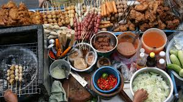

Kalai roti

Kalai roti is a flat bread made from a heavy lentil flower and is served with fresh onions and chili sauce. Rajshahi, Bangladesh. Another delicious meal with our home stay family - fried, spiced eggplant, sabzi (mixed vegetables), and chicken curry. Taken in Hatiandha, Bangladesh.
Street Food of Rajshahi

Fine quality of street foods are supplied at a very low price in front of the Rajshahi Zero Point Mosque.Rajshahi University has a great tradition of street food.